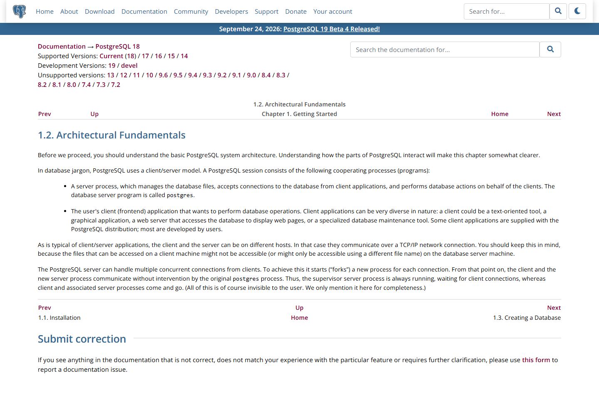
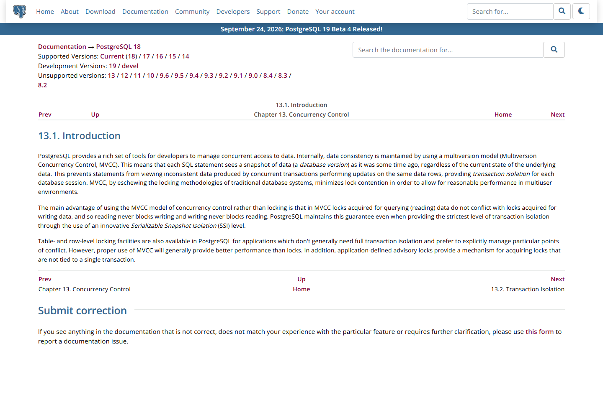
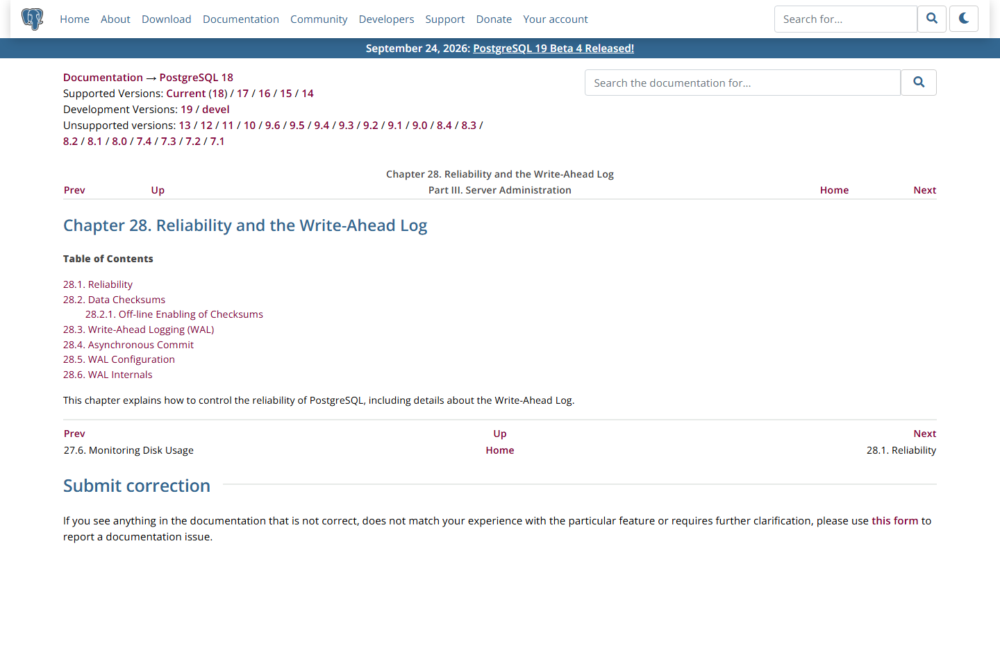

OSS PROJECT INTRO · POSTGRESQL 系列第 3 期：核心概念与整体架构
上一期我们跑通了它,这一期拆开它。四个概念撑起 PG 的全部骨架:进程模型(postgres 守护进程 + 每连接一进程 + 后台进程族)、MVCC 多版本并发控制(读不阻塞写的底气,以及 vacuum 的由来)、WAL 先写日志(崩溃恢复靠它)、查询处理五阶段(一条 SQL 从进门到出结果的路)。顺手回收第 2 期埋的两个钩子:连接池为什么几乎必配、pg_hba 检查完之后发生了什么。基于 v18.6(官方 Latest,2026-08-13 发布),架构描述全部对齐官方文档。
第 2 期结束时,它已经是一个"连上就能用"的黑盒。能用归能用,三个现象解释不了:一问,连接是什么?应用报"too many connections"时,连接到底占了什么资源,为什么 PG 圈人人嘴边挂着连接池?二问,更新去哪了?UPDATE 一行之后,旧值还在不在?磁盘会不会被新旧两份撑爆?vacuum 这个词为什么总在运维会议出现?三问,断电怎么办?写入正在半途,进程被 kill -9,数据凭什么不丢?
这三问的答案,就是本期四个概念。学完它们,第 2 期急救表里的每条报错你都能说出"发生在架构的哪一层"——报错从"查表对号"升级成"看图定位",这是认识架构的直接回报。
整体架构一句话:一个守护进程当家,一条连接一个后端进程,一族后台进程守家业,一块共享内存当中转,一套先写日志保平安。客户端只跟守护进程握手一次,之后就由专属后端进程伺服到底——这是理解后面所有概念的地基。
PG 的服务器进程官名就叫 postgres,官方文档给它的描述是:监听连接、鉴权,然后为每条连接启动("fork")一个新的后端进程;此后客户端与该后端直接对话,守护进程退回监听位。这是与 MySQL"每连接一线程"最大的形态差异:进程比线程重——每条连接都有独立的内存映像与调度开销,max_connections 默认 100 不是保守,是进程模型的物理账。

于是连接池成为 PG 部署的标配:应用侧成百上千的短连接,经 pgbouncer 这类池化组件收敛成后端区区几十条长连接。应用看到的是"连接很便宜",后端保住的是"进程很贵"的底线。守护进程之外,还有一族常驻后台进程替你打理家业:
| 后台进程 | 职责一句话 | 对应概念 |
|---|---|---|
| checkpointer | 周期性把脏页刷盘并做检查点 | WAL / 恢复起点 |
| background writer | 在检查点之间提前把脏页写出 | Buffer 管理 |
| walwriter | 把 WAL 记录从缓冲写到磁盘 | WAL |
| autovacuum launcher / workers | 自动触发清理死元组与冻结 | MVCC |
| logical replication launcher | 为逻辑复制拉起工作者 | 复制 |
来源注记——官方文档 1.2 Architectural Fundamentals(postgresql.org/docs/18/tutorial-arch.html,2026-09-30 截图):server process 即 postgres,"forks a new process for each connection",supervisor process 恒在;后台进程族与 max_connections 默认值见 postgres 参考页与 Server Configuration 各章(2026-09-30 核对)。
MVCC(Multiversion Concurrency Control,多版本并发控制)是 PG 并发的地基,官方定义:每条语句看到的是数据在某个时刻的快照,写操作不覆盖旧值,而是产生新版本。具体到行:每行元组带着两个隐藏列——xmin(创建它的事务号)与 xmax(删除/替换它的事务号)。UPDATE 一行的真实动作是:把旧元组标记上 xmax,插入一条新版本元组,两个版本共存于表中;读事务按自己的快照决定"我该看见哪个版本"。于是有了那句著名的保证:读永远不阻塞写,写也永远不阻塞读。

代价随之而来:旧版本不会自己消失,它们躺在表里变成死元组,占着空间还拖慢扫描。回收工作就是 vacuum——autovacuum 后台进程族自动做,大表频繁更新时它是运维的常驻话题。一句话记住因果链:MVCC 换来读写互不阻塞,死元组是它的账单,vacuum 是付款方式。
WAL(Write-Ahead Log,先写日志)规则只有一句话:数据页的任何变更,先把变更记录写进日志并落盘,再谈数据页本身。提交事务时,PG 默认等的是"WAL 刷盘",而不是"数据页刷盘"——日志是顺序写,便宜;数据页是随机写,昂贵。把昂贵的随机写推给后台的 checkpointer 周期性批量做,把便宜的顺序写放在关键路径上,性能与可靠同时成立。断电重启时,PG 从上一个检查点起重放 WAL,把没来得及落盘的变更补齐——崩溃恢复的全部秘密,就是重放日志。

顺手回收第 2 期的报错:connection refused 之后你用 systemctl 拉起服务,服务起来时做的第一件事就是检查 WAL、执行恢复——你在第 2 期每一次"起服务",都已经用过一次 WAL。
SQL 进了后端进程,走五站:连接分发(已在进门时完成)、解析、分析重写、计划、执行。优化器基于统计信息与代价模型,在索引扫描、顺序扫描、连接方式之间挑一条它认为最便宜的路径——你用 EXPLAIN 看到的就是它的决定,用 EXPLAIN ANALYZE 还能看到实际执行的对照。慢查询调优的第一课不在网上,在统计信息是否新鲜(ANALYZE)与计划是否如你所想(EXPLAIN)。
来源注记——官方文档 Part VII Internals → Overview of PostgreSQL Internals(postgresql.org/docs/18/overview.html,2026-09-30 核对):Parser/Analyzer/Rewriter/Planner/Executor 分工;EXPLAIN 族命令见 SQL Commands 章节。
Buffer 管理:PG 启动时开出一大块共享内存做缓冲池(shared_buffers,默认 128 MB),所有后端进程与后台进程族共用。读写都先走缓冲池里的页:命中就免磁盘,改脏了标记起来交给 bgwriter/checkpointer 择机刷盘。所以调 shared_buffers 的本质是给"热页"多发常驻席位,一般从机器内存的四分之一量级起步压测,不是越大越好。
系统目录:库自己长什么样,PG 存在一组特殊表里,统一挂在 pg_catalog 模式下——表清单在 pg_class,列定义在 pg_attribute,运行中的会话在 pg_stat_activity,参数在 pg_settings。你天天用的 \d、\l,背后就是查这些目录表;SQL 标准口径的 information_schema 是它们的"官方视图版"。元数据也是数据——目录表本身也走 MVCC,也吃 vacuum,这句话是第 04 节概念普适性的最好注脚。
SHOW shared_buffers; SHOW work_mem; SHOW max_connections;
SELECT pid, usename, state, query FROM pg_stat_activity;
SELECT relname, n_live_tup FROM pg_stat_user_tables LIMIT 5;来源注记——参数默认值见官方文档 Server Configuration → Resource Usage(runtime-config-resource.html,2026-09-30 核对):shared_buffers 默认 128MB、work_mem 默认 4MB、max_connections 默认 100;系统目录见 catalogs 与 monitoring-stats 各章。
每题点击选项立即反馈 · 共 3 题
1. PG 为每条客户端连接做什么?为什么连接池几乎必配?
2. UPDATE 一行之后,旧版本元组去哪了?
3. 事务提交时,PG 默认等的是哪个动作完成?
把连接当线程用,典型形态是应用每次请求开新连接、用完即弃,或连接数随服务实例数线性放大。在 MySQL 线程模型下这通常扛得住——线程轻,创建销毁成本小。放到 PG 上,同一行为的物理账完全不同:每条连接是一个 fork 出来的进程,建立时要复制内存映像、初始化执行环境,成本高一个量级;每条连接常驻若干 MB 内存;守护进程还要为每次连接做认证与派生。于是症状很典型:高峰期 too many connections、CPU 花在进程创建与上下文切换上、内存被几十条闲置连接占住、短连接风暴时守护进程忙到影响新连接接入。根治分三层:第一层,池化——pgbouncer 以事务级池化把应用的千级连接收敛为后端几十条,应用侧不改代码;第二层,语义校准——池化后 prepared statements、会话级特性(如临时表、SET 参数)要改用事务级写法或显式管理,这是迁移团队最常见的第二只脚;第三层,容量规划——max_connections 保持默认量级,把"支撑高并发"的职责交给应用侧池,而不是数据库进程数。一句话:MySQL 的连接是"轻羽",PG 的连接是"家丁",养法完全不同。
先还原因果:MVCC 让 UPDATE 产生新版本、旧版本变死元组;死元组堆积的代价有三——表与索引膨胀(扫描要跳过尸体,IO 放大)、事务号回卷风险(PG 事务号 32 位,autovacuum 的 freeze 工作防的是系统级故障,这个不能不还)、计划劣化(统计被死元组污染)。所以深夜频繁跑 autovacuum 不是病,是 MVCC 的账单到期。能不能关?能,但等于宣布"我接管全部回收职责"。决策链四步:第一步,量账单——用 pg_stat_user_tables 看 n_dead_tup 与 last_autovacuum,确认堆积速率;第二步,调参而不是关停——对高频更新大表单独设更激进的 autovacuum_vacuum_scale_factor(如 0.02),把清理摊平到全天,而不是等默认阈值攒一堆深夜爆跑;第三步,改变写入形态——批量更新改成小批多次,超长事务尽快提交(它会让 vacuum 白干,死元组无法越过最老快照回收);第四步,兜底手段——膨胀已成型才用 pg_repack 类在线重组,锁窗口谨慎。关停 autovacuum 换手动清理,唯一的适用场景是"完全由 DBA 掌控写入节奏的维护窗口系统";在线业务这么干,是把确定性风险换成定时炸弹。
带走这五句话:
下期预告:第 4 期《实战:商品中心,一张库装下表 + 文档 + 向量》——jsonb 二进制存储与 GIN 索引、pgvector 建表与相似度查询、HNSW 索引,把第 1 期"数据不动、能力挂载"的心智模型落成可运行的 SQL。
Primary source:PostgreSQL 18 官方文档——进程模型见 Tutorial → Architectural Fundamentals 与 postgres 参考页,MVCC 见 Concurrency Control → Introduction,WAL 见 Reliability and the Write-Ahead Log,执行器分工见 Part VII Internals(2026-09-30 核对)。